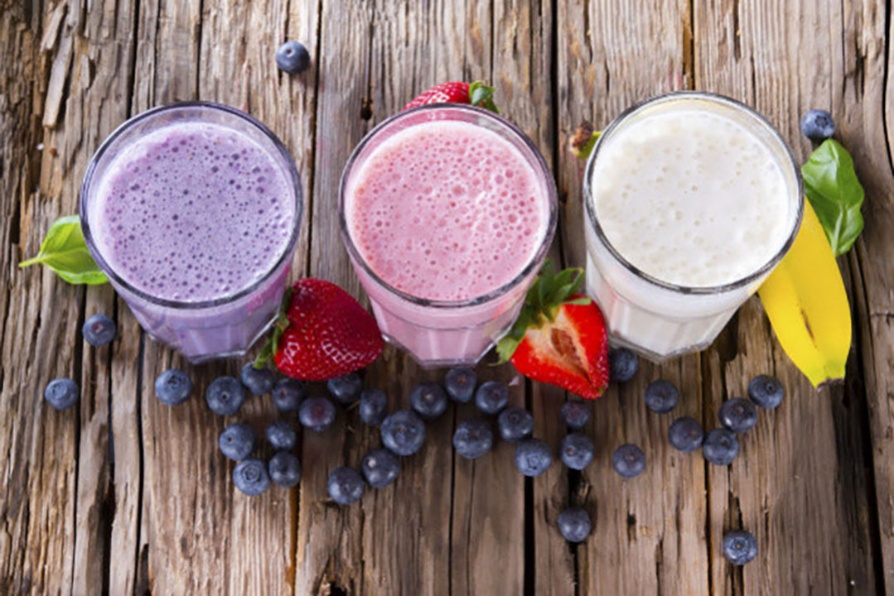
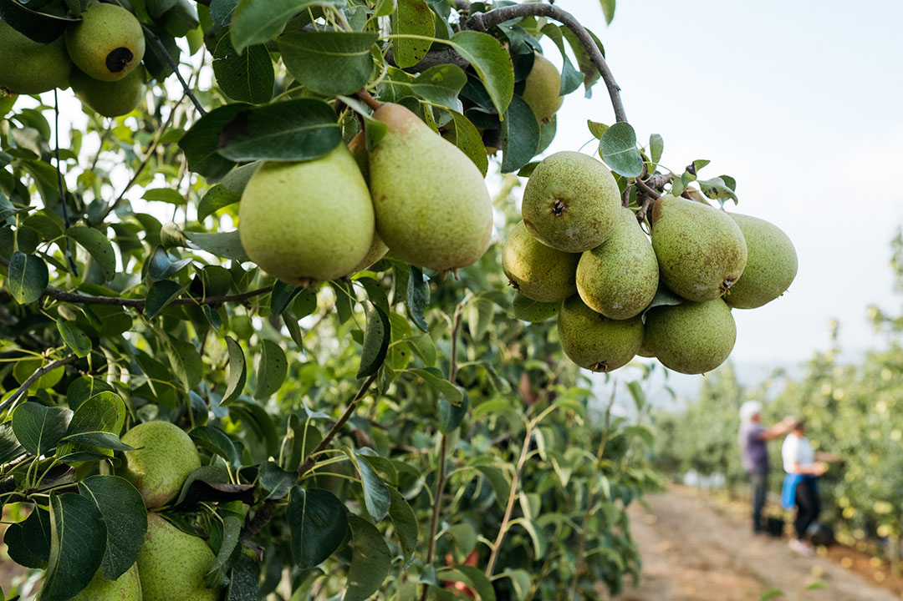
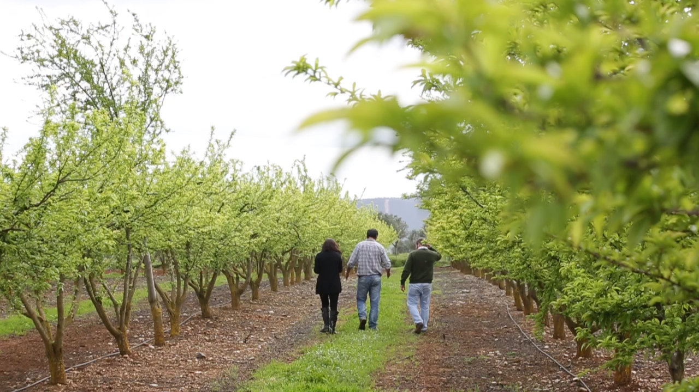
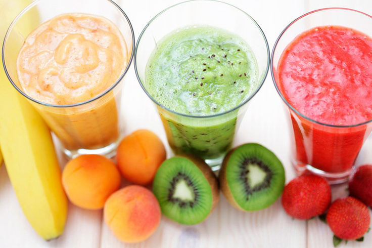
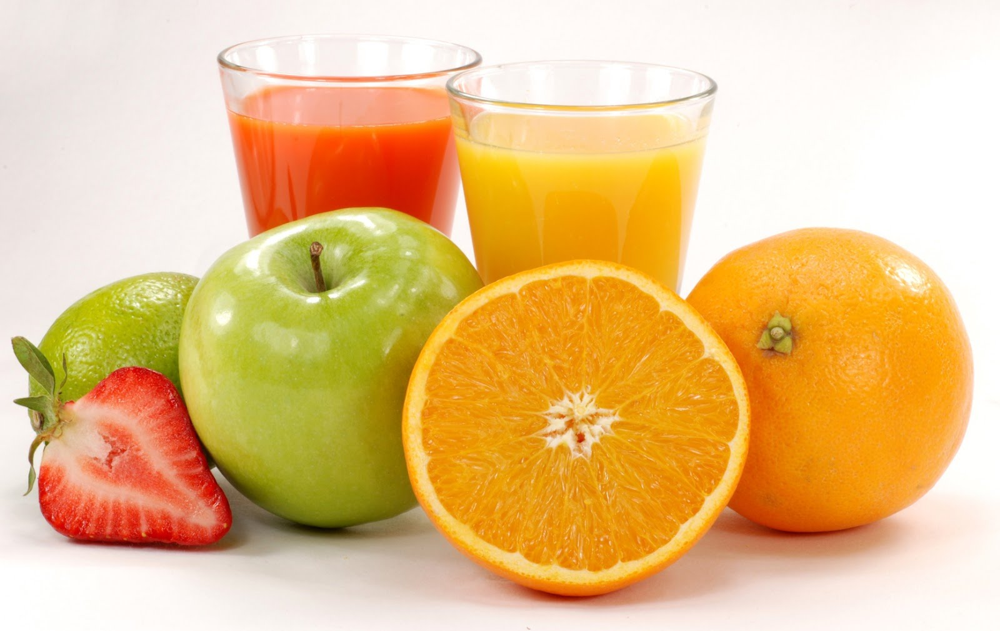
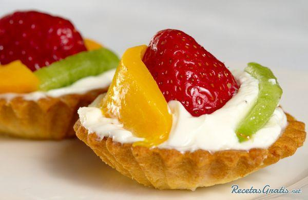
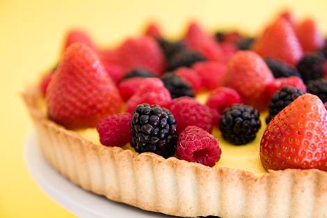

Batidos
Combinações improváveis
Como fazer
Passo a passo
Valor nutricional
Frutologia
Vem descobrir o bom sabor da fruta.
Batidos
Combinações improváveis
Como fazer
Passo a passo
Valor nutricional

Figura 1: Diferença entre néctar, sumo 100% e batido

Figura 2: Vantagens de utilizar fruta nas receitas diárias.

Figura 3: Origem da fruta
Batidos
Para fazer um batido vais precisar de:
Gelo
Fruta à tua escolha
Liquidificador
Iogurte ou leite
Combinações improváveis
 


Como fazer
Passo a passo
Descascar a fruta
Cortar a fruta
Misturar tudo no liquidificador
Valor nutricional
Valor nutricional
Batido
Calorias
Batido de banana
60
Batido de morango
30
Batido de kiwi
40
Batido de amora
20